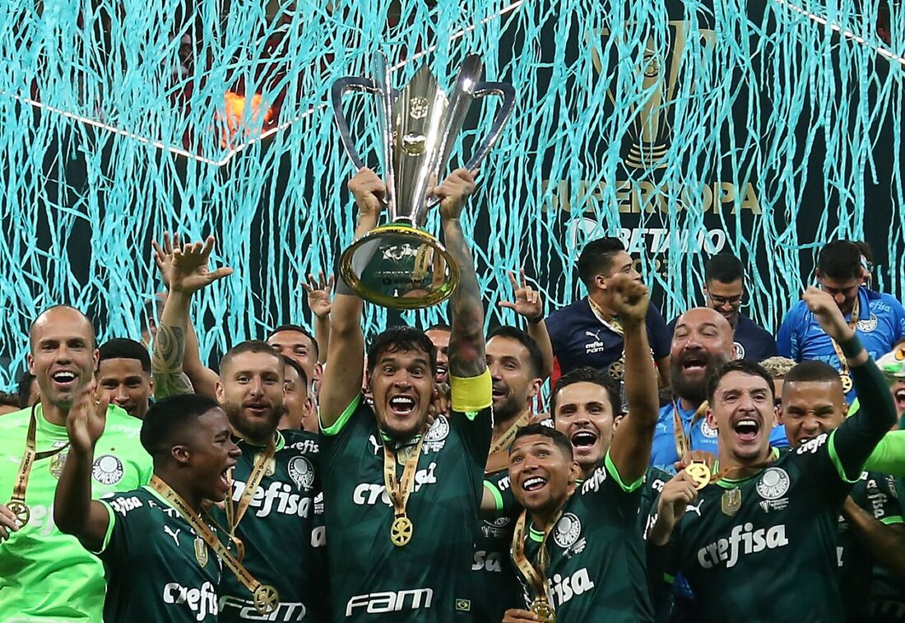

O Palmeiras, maior campeão nacional e dono de uma das trajetórias mais gloriosas do futebol brasileiro, chega a mais uma final de Paulistão reafirmando sua supremacia no cenário estadual. Com uma gestão impecável, um elenco estrelado e um dos técnicos mais vitoriosos do futebol atual, o Verdão demonstra, ano após ano, porque é considerado o time mais dominante da última década. Com um futebol envolvente, uma defesa sólida e um ataque letal, o Palmeiras atropelou adversários ao longo da competição, deixando claro que não há espaço para dúvidas: a taça já tem dono. Mais do que um time, o Palmeiras é uma máquina de títulos, acostumado a decisões e à pressão de grandes momentos. Se há um clube que sabe o significado de grandeza, tradição e glória, esse clube é o Alviverde Imponente. Agora, diante de mais uma final, o Verdão não entra apenas para competir – entra para vencer. Porque ser palmeirense é sinônimo de comemorar títulos, calar rivais e manter o gigante no topo. O adversário? Apenas um detalhe. A taça? Apenas uma formalidade. Porque o Palmeiras nasceu para ser campeão!
